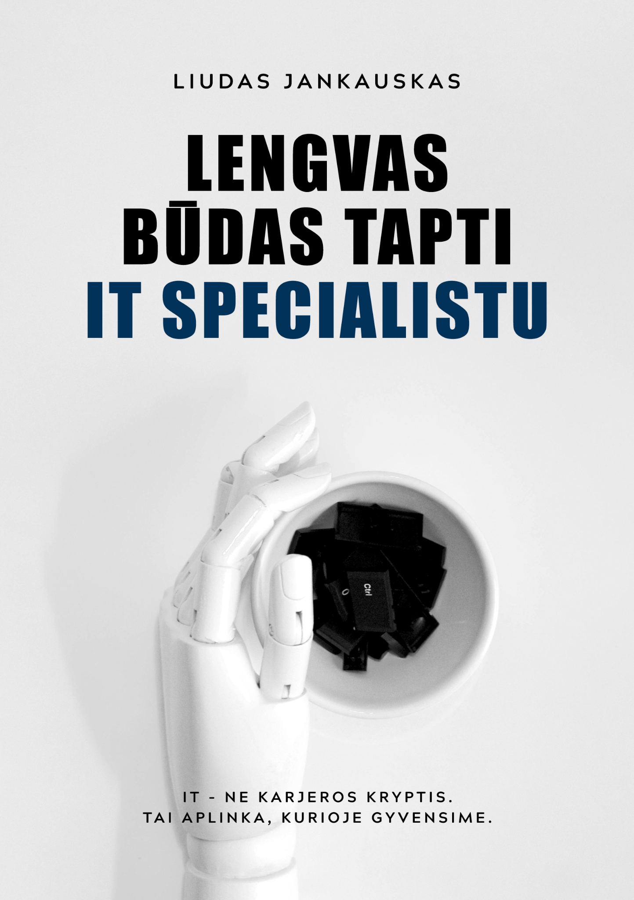

Kas galvoja apie IT
Jei nori persikvalifikuoti, bet nenori pradėti nuo atsitiktinių patarimų ir gražių pažadų.
Liudas Jankauskas
Knyga žmonėms, kurie galvoja apie IT, bet nenori pirkti pasakų apie „greitą karjerą“. Apie testavimo mąstymą, profesijos keitimą ir realybę, kuri dažnai lieka už kursų reklamų ribų.

Apie knygą
Ši knyga parašyta žmogui, kuris svarsto keisti profesiją, bet dar nežino, nuo ko pradėti. Joje nėra pažado, kad po trijų mėnesių gyvenimas pasikeis. Yra aiškumas, kaip atrodo IT darbas, kodėl testavimas gali būti realus startas ir kokius mitus verta išmesti dar prieš perkant kursus.
Testavimas čia nėra pristatomas kaip atsarginis kelias tiems, kuriems nepavyko programuoti. Tai mąstymo būdas: klausti, tikrinti, abejoti, ieškoti rizikos ir suprasti, kaip veikia sistemos.
Jei nori persikvalifikuoti, bet nenori pradėti nuo atsitiktinių patarimų ir gražių pažadų.
Jei nori suprasti, kas iš tikrųjų yra testavimas ir kodėl tai nėra „tiesiog spaudyti mygtukus“.
Jei nori geriau suprasti testavimo mąstymą, rizikas ir tai, kodėl kokybė nėra vien QA problema.
Kur įsigyti
Pasirink patogiausią pardavėją. Lietuvoje — knygynai ir e. parduotuvės. Užsienyje — Amazon.
Amazon skirtas lietuviams, gyvenantiems ne Lietuvoje.
Amazon UK, Airija, Norvegija, Vokietija, JAV ir kitos šalys AtidarytiKai yra likutis, knygą galima įsigyti ir tiesiogiai per itknyga.lt.
Pirkti tiesiogiaiGoodreads
Palik savo įvertinimą Goodreads platformoje.
Ištrauka
Čia gali peržiūrėti knygos pradžią: turinį, pratarmę ir įvadinius puslapius. Pakanka suprasti toną, struktūrą ir ar ši knyga tau tinka. Jei ne – viskas gerai. Nėra knygų, kurios tinka visiems.
Atidaryti PDFSkaitytojai
Skaitytojų pasidalinimai.
Media
Nuorodos į publikacijas apie QA, IT rinką ir autoriaus veiklą. Tai nėra knygos reklaminiai tekstai — tai platesnis profesinis kontekstas.
DUK
Ne. Ji apie kelią į IT, testavimo mąstymą ir realybę, su kuria susiduria žmonės, norintys pradėti arba persikvalifikuoti.
Taip. Knyga būtent ir rašyta žmogui, kuris dar nėra IT viduje, bet nori suprasti, nuo ko pradėti ir ko tikėtis.
Ne. Tai ne techninis vadovėlis ir ne sertifikato konspektas. Tai knyga apie mąstymą, mitus, profesijos pasirinkimą ir realias istorijas.